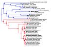
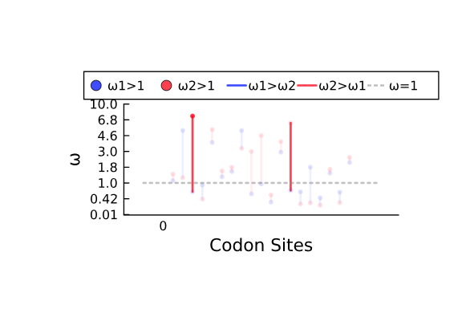
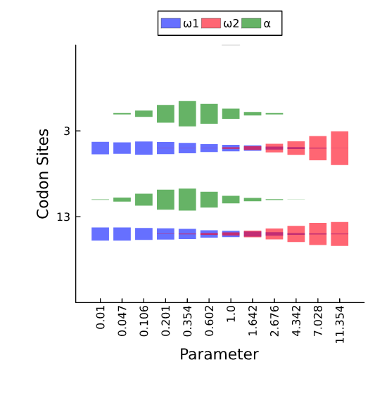

difFUBAR
An interface to difFUBAR (awaiting the correct link)
Example
Reads codon sequences from this FASTA file, and a tagged phylogeny from this NEXUS tree file.
using MolecularEvolution, FASTX, CodonMolecularEvolution
analysis_name = "output/Ace2"
seqnames,seqs = read_fasta("data/Ace2_tiny_test.fasta");
treestring, tags, tag_colors = import_colored_figtree_nexus_as_tagged_tree("data/Ace2_no_background.nex")
df,results = difFUBAR(seqnames, seqs, treestring, tags, analysis_name);Step 1: Initialization. If exports = true, tree showing the assignment of branches to groups/colors will be exported to: output/Ace2_tagged_input_tree.svg.
Step 2: Optimizing global codon model parameters.
0.0% 29.0% 58.0% 87.0%
Step 4: Running Gibbs sampler to infer site categories.
Step 5: Tabulating and plotting. Detected sites:
Site 3 - P(ω1 > ω2):0.0075; P(ω2 > ω1):0.9805; P(ω1 > 1):0.1205; P(ω2 > 1):0.9675
Site 13 - P(ω1 > ω2):0.0175; P(ω2 > ω1):0.9605; P(ω1 > 1):0.13; P(ω2 > 1):0.9305
If exports = true, writing results for all sites to CSV: output/Ace2_posteriors.csv
Plotting alpha and omega distributions. If exports = true, saved as output/Ace2_violin_*.pdfHere's a selection of the output files:
output/Ace2_tagged_input_tree.svg

difFUBAR allows for an optional, untagged, background branch set.
output/Ace2_site_omega_means.pdf

output/Ace2_violin_all_params.pdf

The output has a stochastic element to it due to the MCMC.
Interface
CodonMolecularEvolution.difFUBAR — FunctiondifFUBAR(seqnames, seqs, treestring, tags, outpath; <keyword arguments>)Takes a tagged phylogeny and an alignment as input and performs difFUBAR analysis.
Arguments
seqnames: vector of untagged sequence names.seqs: vector of aligned sequences, corresponding toseqnames.treestring: a tagged newick tree string.tags: vector of tag signatures.outpath: export directory.tag_colors=DIFFUBAR_TAG_COLORS[sortperm(tags)]: vector of tag colors (hex format). The default option is consistent with the difFUBAR paper (Foreground 1: red, Foreground 2: blue).pos_thresh=0.95: threshold of significance for the posteriors.iters=2500: iterations used in the Gibbs sampler.verbosity=1: as verbosity increases, prints are added accumulatively.- 0 - no prints
- 1 - show current step and where output files are exported
- 2 - show the chosen
difFUBAR_gridversion and amount of parallel threads.
exports=true: if true, output files are exported.code=MolecularEvolution.universal_code: genetic code used for the analysis.optimize_branch_lengths=false: if true, the branch lengths of the phylogenetic tree are optimized.version::Union{difFUBARGrid, Nothing}=nothing: explicitly choose the version ofdifFUBAR_gridto use. Ifnothing, the version is heuristically chosen based on the available RAM and Julia threads.t=0: explicitly choose the amount of Julia threads to use. If0, the degree of parallelization is heuristically chosen based on the available RAM and Julia threads.
Julia starts up with a single thread of execution, by default. See Starting Julia with multiple threads.
For a simple and often optimal configuration
- Launch Julia in the following manner:
julia -t auto - Keep the default values of the kwargs
versionandt
This lets Julia decide the amount of Julia threads and lets CodonMolecularEvolution.jl decide the difFUBARGrid subtype to dispatch on and the degree of parallelization.
difFUBARGrid
Subtypes that decide which method to use for the grid likelihood computations.
CodonMolecularEvolution.difFUBARBaseline — TypeConstructor
difFUBARBaseline()Description
Use the trivial implementation of the grid likelihood computations, i.e. 1 thread without sub-tree likelihood caching.
See also: difFUBARParallel, difFUBARTreesurgery, difFUBARTreesurgeryAndParallel.
CodonMolecularEvolution.difFUBARParallel — TypeConstructor
difFUBARParallel()Description
Extend the baseline version by parallelizing the grid calculations. Requires julia to be launched with the t switch. Using t computational threads, where t is sufficiently small, memory complexity is usually O(t) and time complexity O(1/t). Empirical tests suggests that t should not be higher than the machine's total CPU threads and usually not higher than half of it's total threads.
See also: difFUBARBaseline, difFUBARTreesurgery, difFUBARTreesurgeryAndParallel.
CodonMolecularEvolution.difFUBARTreesurgery — TypeConstructor
difFUBARTreesurgery()Description
Use sub-tree likelihood caching described in the "Methods" section of the difFUBAR paper. Use more memory than the baseline version but be significantly faster, if purity is high.
See also: difFUBARBaseline, difFUBARParallel, difFUBARTreesurgeryAndParallel.
CodonMolecularEvolution.difFUBARTreesurgeryAndParallel — TypeConstructor
difFUBARTreesurgeryAndParallel()Description
Use parallelization and sub-tree likelihood caching. The most performant version in most cases. Use more memory than other versions.
See also: difFUBARBaseline, difFUBARTreesurgery, difFUBARParallel.